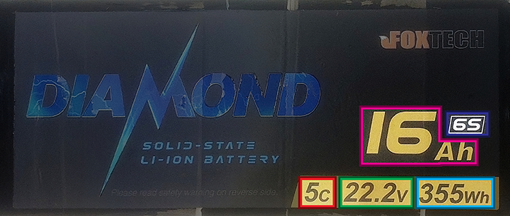
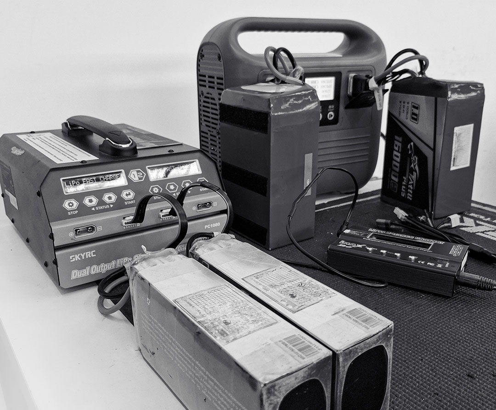
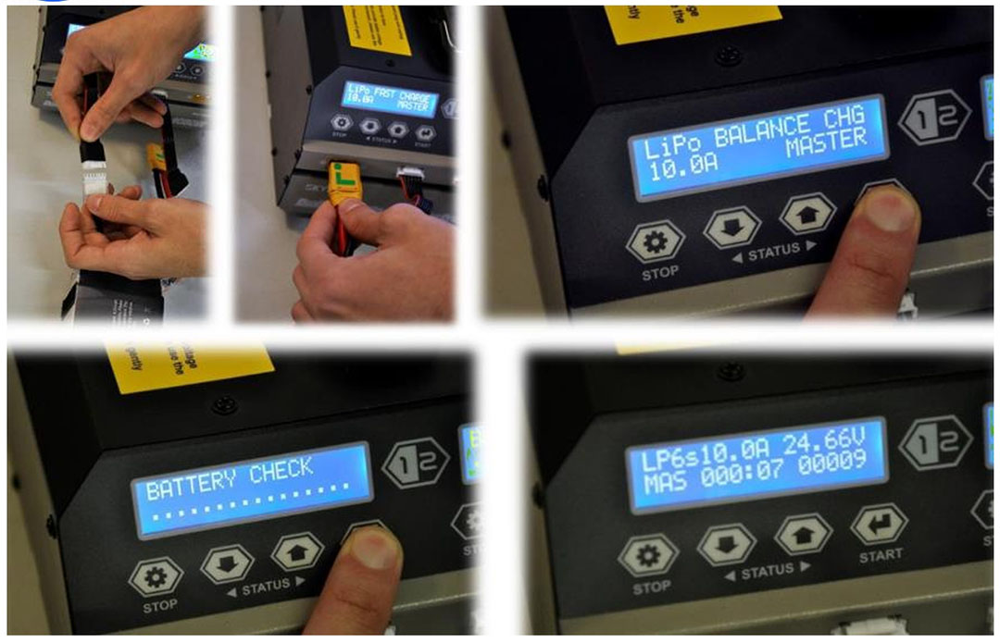
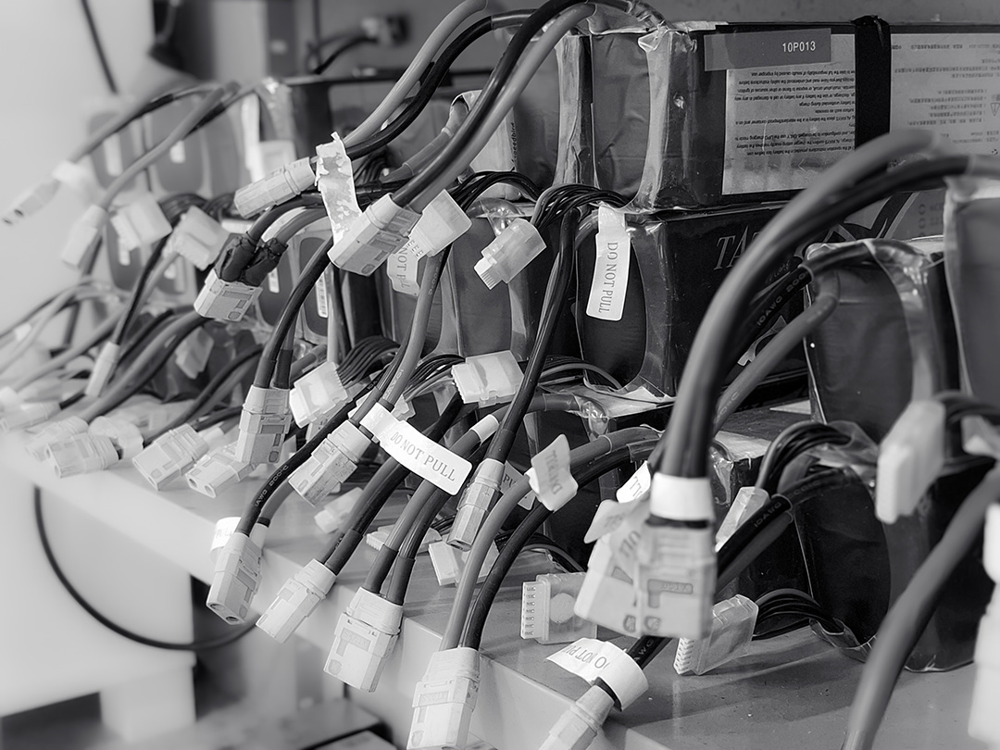
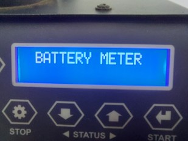
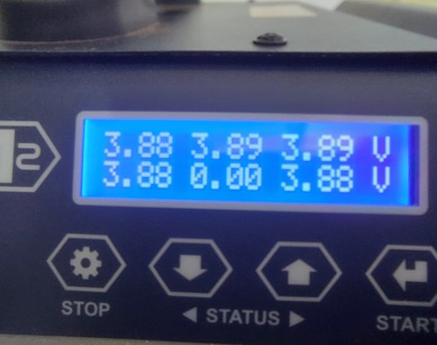
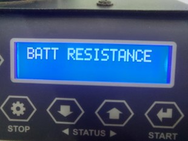
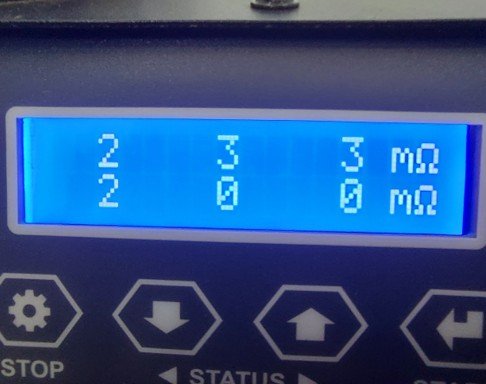

Tipos de Baterias
LI-ION
As baterias Li-Ion são amplamente utilizadas em eletrônicos portáteis, como laptops e celulares, devido à sua alta densidade de energia e baixa taxa de autodescarga. Elas têm maior ciclo de vida em comparação com outras baterias recarregáveis, mas são sensíveis a temperaturas extremas e podem se deteriorar rapidamente se não forem carregadas ou descarregadas adequadamente.
LI-PO
As baterias Li-Po são leves e flexíveis, o que as torna ideais para dispositivos compactos, como drones e smartphones. Elas possuem alta densidade de energia e oferecem boa performance em aplicações que exigem descargas rápidas. No entanto, são sensíveis a danos físicos e ao excesso de carga ou descarga, exigindo cuidados específicos durante o uso e armazenamento.
LI-FE
As baterias Li-Fe são conhecidas por sua estabilidade química e segurança, sendo menos propensas a incêndios ou explosões em comparação com outras baterias de lítio. Elas possuem vida útil longa e alta resistência a ciclos de carga e descarga. Embora tenham menor densidade de energia, são amplamente utilizadas em aplicações como veículos elétricos e sistemas de energia solar.
NiCd
As baterias NiCd são robustas e confiáveis, com capacidade de operar em uma ampla faixa de temperaturas. Elas possuem boa durabilidade e são usadas em aplicações industriais e ferramentas elétricas. No entanto, apresentam efeito memória, que reduz sua capacidade se não forem descarregadas completamente antes de serem recarregadas, além de conter cádmio, um material tóxico que exige descarte adequado.
NiMH
As baterias NiMH são uma evolução das NiCd, com maior capacidade de armazenamento de energia e menor impacto ambiental. Elas são menos suscetíveis ao efeito memória, mas possuem uma taxa de autodescarga mais alta. São amplamente utilizadas em dispositivos de consumo, como controles remotos, brinquedos e câmeras digitais.
Parâmetros das Baterias

Taxa de Descarga
- A Taxa de Descarga (C Rating) simplesmente indica a velocidade com que uma bateria pode ser descarregada com segurança.
- Quanto maior o "C" rating, maior será o pico de energia momentânea.
- A desvantagem de uma alta taxa de descarga é que pode tornar a bateria mais pesada e afetar seu desempenho, além de ser mais cara do que uma com taxa inferior.
- nC = n x Capacidade
- 5 x 16.000 mAh = 80.000 A
Configuração de Célula
- Cada célula possui uma tensão nominal de 3,7V.
- Ao conectar mais células em série, a tensão aumenta. Por exemplo: 7,4V em uma bateria de 2 células, 14,8V em uma bateria de 4 células, e assim por diante.
- Ao conectar mais baterias em paralelo, a capacidade aumenta.
- Frequentemente, você verá números como 3S2P, que significam que a bateria possui 3 células (3S) conectadas em série, e há 2 conjuntos de células conectadas em paralelo (2P), totalizando 6 células individuais na bateria
- O número de células em série é o que define a tensão da bateria.
Tensão e Potência
- A tensão influencia diretamente o RPM do motor elétrico
- Potência (P) =Tensão (U) × Corrente (I)
| 1S | 3,7V |
|---|---|
| 2S | 7,4V |
| 3S | 11,1V |
| 4S | 14,8V |
| 5S | 18,5V |
| 6S | 22,2V |
| 8S | 29,6V |
| 10S | 37V |
| 12S | 44,4V |
Capacidade da bateria
- A capacidade é usada para medir a quantidade de energia que uma bateria pode armazenar
- Determina por quanto tempo você pode usar antes de precisar recarregar.
- A unidade de capacidade é miliampere-hora (mAh)
- Miliampere também pode ser convertido para ampere (A)
- 16000mAh = 16 Ampere-hora (16Ah)
Manuseio
- Sempre transporte a bateria segurando no maximo 1 pack (duas baterias) por mao
- Nunca transporte a bateria segurando pelo cabo de alimentacao
- Nunca segure ou puxe a bateria pelos cabos de sinal
Conectando a Bateria no Drone
DLV-1
- Posicione a bandeija do pack no compartimento de baterias do drone;
- empurre a bandeja no trilho ate que a trava trave a bandeja na posicao;
- conecte os conectores xt-90 das baterias nos conectores do drone que ficam logo a cima da entrada do compartimento de baterias;
- Não tente forcar o conector, caso o mesmo esteja dificil de encaixar, verifique se a polaridade está correta e se não há nenhum objeto obstruindo a entrada no conector dos conectores;
- certifique que ambos os conectores estão encaixados até o fim e que estejam firmes.
DLV-2
- Posicione dois packs de bateria, um ao lado do outro, no compartimento de baterias, de maneira que os conectores fiquem virados para fora;
- garanta que a bandeja tenha travado na posicao, de maneira que ela não se mova para fora do drone;
- conecte os conectores xt-90 das baterias nos conectores do drone que ficam em pares ao lado de cada pack de bateria;
- Não tente forcar o conector, caso o mesmo esteja dificil de encaixar, verifique se a polaridade está correta e se não há nenhum objeto obstruindo a entrada no conector dos conectores;
- ao conectar um dos packs, o drone já irá iniciar;
- certifique que todos os conectores, dos dois packs, estão encaixados até o fim e que estejam firmes.
Carregamento

É de responsabilidade do operador garantir que o carregador que utilizado, funcione corretamente. Sempre monitore o processo de carregamento para garantir que as baterias estão sendo carregadas adequadamente. A falta de monitoramento pode resultar em incêndio.
Antes da Carga
- Caso utilize um carregador diferente, leia o manual de instruções do carregador antes de iniciar o carregamento.
- Sempre verifique a tensão das baterias antes de cada sessão de carregamento para garantir que estejam na tensão mínima segura ou acima dela. Se a tensão inicial estiver abaixo dos níveis recomendados, significa que as baterias foram descarregadas em excesso ou sofreram uma falha e NÃO devem ser carregadas.
- Sempre verifique a bateria antes de carregá-la para identificar qualquer tipo de dano. Inspecione a embalagem da bateria, os fios e os conectores em busca de defeitos, que podem causar um curto-circuito e eventual falha da bateria.
- Certifique-se de que você está usando cabos de carga compatíveis com os conectores da bateria
- O usuário deve verificar cuidadosamente a polaridade do cabo da bateria e do cabo do carregador antes da conexão para evitar qualquer curto-circuito. Da mesmo forma deve garantir a correta conexao dos cabos de sinal.
- Sempre verifique se o carregador está em boas condições. Um carregador de má qualidade pode ser perigoso.
Durante o Carregamento
- Use apenas carregadores projetados para baterias de polímero de lítio (LiPo)/íon de lítio (Lion). Não use carregadores para NiMH/NiCd/LiFePO4/baterias de ácido de chumbo. Se o carregador suportar diferentes tipos de baterias, certifique-se de selecionar o modo polímero de lítio (LiPo) no carregador. A falha em fazer isso pode causar incêndio, resultando em danos pessoais e materiais.
- Sempre carregue as baterias em uma área aberta, longe de materiais inflamáveis, líquidos e superfícies.
- Nunca carregue as baterias dentro da aeronave.
- Nunca carregue as baterias abaixo de zero (0°C, 32°F).
- Nunca carregue baterias que estão quentes ao toque (acima de 38°C). NÃO manuseie as baterias até que estejam frias.
- Sempre configure o carregador para a contagem de células e/ou tensão correta conforme listado nos rótulos das baterias
- Sempre configure o carregador para a taxa de carga em ampéres conforme listado nos rótulos das baterias
- Nunca sobrecarregue as baterias além da capacidade listada nos rótulos das baterias.
- Nunca sobrecarregue as c[elulas dasbaterias acima de sua tensao máxima nominal (4,2V/célula).
- Não deixe carregador conectado à bateria por um longo tempo depois que a bateria estiver completamente carregada.
O carregador nunca deve ser configurado para carregar baterias a uma taxa superior a 1C (uma vez a capacidade das baterias em ampères-hora), a menos que outra taxa C seja especificada na documentação do fabricante ou que a taxa seja predefinida como parte de uma combinação específica de bateria e carregador. NÃO altere a taxa de carga após o início do carregamento.
Descarga
- Nunca descarregue as baterias a taxas de corrente superiores às especificadas nos rótulos das baterias.
- Nunca permita que a temperatura das baterias exceda 60°C durante a descarga. É necessário resfriamento adequado para as baterias, especialmente ao descarregar em ou perto das taxas máximas.
- Nunca descarregue as baterias para uma tensão abaixo do que elas são classificadas pelo fabricante quando medidas sob carga (conectadas ao veículo ou a um carregador capaz de descarga). Baterias descarregadas para uma tensão inferior à voltagem mínima aprovada podem ser danificadas, resultando em perda de desempenho e potencial risco de incêndio quando carregadas.
- Nunca descarregue a bateria a um nível abaixo de 3V por célula.
- Nunca deixe a bateria sem supervisão durante o processo de descarga. Durante o processo de descarga, o usuário deve monitorar constantemente e reagir a possíveis problemas que possam ocorrer.
- O usuário precisa verificar as condições da bateria antes de usá-la ou descarregá-la. Pare de usá-la se encontrar células desequilibradas, inchadas.
O Carregador de Bateria
Os carregadores estão ficando mais inteligentes e podem detectar a condição de cada célula dentro do pacote de baterias, como a tensão. É conveniente para os usuários saberem o desempenho da bateria e o status de carregamento.
O armazenamento da bateria LiPo também requer cuidados; sabemos que a bateria LiPo não pode ser armazenada totalmente carregada, ela precisa ser mantida na faixa de 3,6~3,9V, e o carregador inteligente pode ajudá-lo a ajustar a tensão da bateria para um valor específico de armazenamento (storage).
Os carregadores inteligentes possuem mais recursos, como registro e armazenamento de dados, reconhecimento automático, função de correção de potência PFC, função de compensação de temperatura e sistema de dissipação de calor.
Utilizamos o carregador da SKYRC modelo PC 1080:

SkyRC PC-1080 Manual de Instruções
Procedimento de Carregamento
Para carregar a bateria, siga os seguintes passos:
- Ligue o carregador no interruptor que se encontra na parte traseira do carregador;
- conecte o conector xt-90 do cabo de energia da bateria no respectivo slot do carregador;
- conecte o conector de balanceamento de células da bateria no no respectivo slot do carregador, no mesmo lado que o conector principal;
- selecione o modo "Balance charge" no carregador precionando uma vez o botão 'start' e em seguida as setas para cima ou para baixo;
- pressione mais uma vez 'start' e selecione a corrente desejada, de acordo com a bateria a ser carregada, precionando as setas para cima ou para baixo, (ex. 16.0A para baterias de 16.000mAh);
- pressione mais uma vez 'start' e selecione entre os modos "master" ou "off-line" e pressione 'start' novamente. ( o modo off-line comandará separadamente os dois canais do carregador enquanto o modo master irá copiar as configurações do canal selecionado, para o segundo);
- para iniciar o carregamento, pressione e segure o botão 'start' do carregador até que o mesmo emita um sinal sonoro de inicio do carregamento;
- após iniciar o carregamento, observe o visor do carregador até que a corrente suba para o valor configuradoe verifique se ocorrerá algum erro;
- durante o processo de carregamento, acompanmhe sempre que possível, observando por possíveis menssagens de erro ou sinais sonoros.
- Para parar o carregamento a qualquer momento, pressione o botão 'stop';
- Ao finalizar o carregamento, o carregador emitirá um sinal sonoro, pressione o botão 'stop' e então desconecte os cabos da bateria.
- Marque o ciclo da bateria



Para mais detalhes sobre o carregador e sua configuração, leia o manual de instruções.
Problemas de Carregamento
Os seguintes erros podem aparecer durante o carregamento:
 | Falha na detecção da bateria. Verifique se a bateria está conectada corretamente no canal correspondente do carregador. |
|---|---|
 | Contagem incorreta de células. Verifique o conector de balanceamento de células. |
| Erro de conexão, verificação da porta principal. Verifique se a bateria está conectada corretamente no canal correspondente do carregador. | |
 | O carregamento excedeu o limite de carga maxima configurada. Verifique, no menu "settings", se a configuração de limite de carga em mAh que o carregador permite carregar, a bateria está de acordo com a capacidade da bateria. |
| Falha de controle. Tente reiniciar o carregador. Caso o erro permaneça ocorrendo reporte ao suporte. | |
 | O tempo de carregamento excede o tempo maximo configurado. Verifique, no menu "settings", se a configuração de tempo limite está abaixo do tempo de carga da bateria. Caso o tempo decorrido de carregamento seja realmente muito alto, cancele o carregamento e reporte ao suporte. |
| Temperatura interna alta. Pare o carregamento, desligue o carregador, desconecte a bateria e aguarde cerca de 15 minutos para que o carregador se esfrie. Tente novamente a carregar, caso a menssagem seja recorrente. reporte ao suporte e suspenda o uso do carregador. | |
| Polaridade invertida. Verifique a conexão do carregador com a bateria. | |
 | Bateria totalmente carregada. Indica que a bateria já está carregada, verifique a tensão da bateria. |
 | Tensão das céluas alta. Cheque a coneção principal. Aborte o carregamente e verifique a tensão das células da bateria. |
Vida Útil
Os packs de bateria possuem vida util maxima de 500 ciclos, sendo possivel perceber uma queda em seu desempenho com cerca de 300 ciclos.
A vida da bateria pode ser reduzida se ela não for usada por um longo período. Carregue totalmente a bateria pelo menos uma vez a cada 3 meses para manter a sua integridade.
Registro de Ciclos
E responssabilidade do operador acompanhar e registrar os cilos de carregamente das baterias. Após cada carregamento, deve-se marcar um ciclo nas etiquetas ou tags da bateria. Deve-se marcar um ciclo mesmo se a bateria não tiver sido utilizada por completo.
Armazenamento

Quando for guardar as baterias ou não utiliza-las por um período de 10 dias ou mais, siga as seguintes recomendações:
- Descarregue a bateria até o nível de 40% a 65% (na faixa de 3,7V a 3,9V por célula) colocando-as em "Storage" no carregador
- NÃO armazene a bateria por um longo período com a sua energia totalmente descarregada. Isso pode levar a danos irreversíveis
- Mantenha a bateria fora do alcance de crianças e de animais. NÃO deixe a bateria próxima a fontes de calor, como fornos ou aquecedores.
- NÃO deixe a bateria dentro de veículos em dias quentes.
- Sempre mantenha a bateria seca.
- Nunca armazene baterias soltas juntas, pois os terminais das baterias podem se tocar, causando um curto-circuito.
- Nunca armazene as baterias em temperaturas extremas ou sob luz solar direta. A bateria deve ser armazenada em condições ambientais dentro da faixa de -10℃ a 45℃.
- Sempre desconecte as baterias quando não estiverem em uso.
- NÃO deixe a bateria cair nem sofrer impáctos, não a perfure e não a coloque em curto-circuito.
- Mantenha a bateria longe de objetos metálicos como óculos, relógios, joias e grampos de cabelo.
- Nunca tente viajar ou transportar uma bateria danificada.
Problemas com as Baterias
É possível identificar um bateria com defeito medindo sua tensão e resistência interna das células com o carregador. Ao suspeitar de problemas com a bateria pode realizar medições e comparações a fim de identificar uma bateria defeituosa.
Medindo a tensão das células
- Conecte a bateria ao carregador;
- pressione o botão 'stop' até o menu 'BATTERY METER';
 - pressione o botão 'start' para começar a medição;
- a tensão individual de cada célula aparecerá no visor.
Uma bateria normal, SEM problemas, deverá mostrar tensões de muito célula semelhantes, com pouca variação entre elas.
exemplo:
Uma bateria com uma ou mais células defeituosas, poderá apresentar células desbalanceadas, mostrando uma maior variação entre as tensões, ou mesmo células cuja a tensão seja 0V.
exemplos:

Medindo a resistência das células
- Conecte a bateria ao carregador;
- pressione o botão 'stop' até o menu 'BATT RESISTANCE';
 - pressione o botão 'start' para começar a medição;
- a resistência individual de cada célula aparecerá no visor.
Uma bateria normal, SEM problemas, deverá mostrar baixa resistência com pouca variação entre elas.
exemplo:
Uma bateria com uma ou mais células defeituosas, poderá apresentar resistência muito alta em suas células ou 0 caso não haja leitura
exemplos:

Segurança e Contenção de Riscos
Em caso de emergência, interrompa imediatamente o processo, desconecte a bateria, coloque-a em uma área segura e observe por aproximadamente uma hora.
Danos a bateria pode fazer com que a reação com o ar dos produtos químicos, pode causar a ignição, resultando em um incêndio.
Uma área segura deve estar fora de qualquer edifício ou veículo e longe de materiais combustíveis.
Uma bateria ainda pode se incendiar mesmo após uma hora.
Descarte a bateria imediatamente caso ela não possa ser carregada ou após uma descarga excessiva.
Descarte da bateria
- Descarte a bateria somente depois de sua descarga completa.;
- NÃO coloque a bateria em recipientes ou latas de lixo comum;
- Descarte a bateria em locais de descarte de baterias em sua região; Consulte o ponto mais próximo.